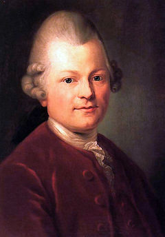

Wednesday, November the 3rd, 2010
back to: title, date or indexes
Readers who keep track of these things will know that I am fond of Horace Walpole's coinage “bewolfenbuttlement”, recently noted in my cupboard at The Dabbler. I have today learned that Gotthold Ephraim Lessing, that great figure of the Enlightenment, was for some years the librarian at the Herzog-August-Bibliothek in Wolfenbüttel. In the 1770s, he published, anonymously, the Wolfenbüttel Fragments, essays by the (deceased) Professor of Oriental Languages at Hamburg, Reimarus, questioning the status of miracles recounted in the Bible.
His skepticism in this regard means Lessing is one of the few European thinkers who has a ditch named after him. It is an ugly, broad ditch, but, disappointingly, is a theoretical ditch rather than a real one.
He also had an interestingly egg-shaped head.
